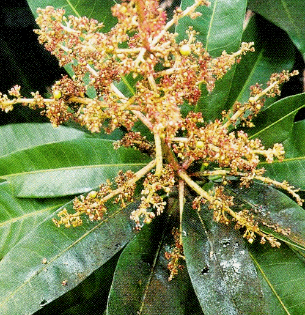

| Home |
Mango |
| 1. Mango Hoppers |
| 2. Stemborer |
| 3. Fruitfly |
| 4. Mango Nut Weevil |
| 5. Mango Mealy Bug |
| 6. Bark Eating Caterpillar |
| 7. Flower Gall Midge |
| 8. Mango Leaf Webber |
| 9. Shoot Borer |
| 10. Leaf Caterpillar |
| 11. Flower Webber |
| 12. Leaf Caterpillar |
| 13. Leaf Miner |
| 14. Leaf Twisting Weevil |
| 15. Red Ant |
| 16. Eriophyid Mite |
| Questions |
| Download Notes |
Pests of Mango :: Major Pests :: Mango Hoppers
1. Mango hoppers: Idioscopus niveosparus, I. clypealis, Amritodus atkinsoni (Cicadellidae : Hemiptera)
|
|||||||
Distribution and status: India, Indonesia, Formosa, Philippines, Taiwan, Vietnam, Srilanka, Burma, Pakistan, Bangladesh and Malaysia. Major pest prevalent in the flowering season and devastating in all mango growing areas.
|
 |
||||||
Damage symptoms: Both nymphs and adults suck the sap from tender shoots and inflorescence resulting in withering and shedding of flower buds and also wilting and drying of shoots and leaves.
Bionomics: Eggs are laid in single into the tissues of the young leaves, shoots, flower stalk and unopened flowers. Incubation period: 4-7 days. Nymphal period: 8-13 days, 5 instars. Life cycle completed in 2-3 weeks. |
 | ||||||
IPM Avoid close planting, as the incidence very severe in overcrowded orchards
|
|||||||